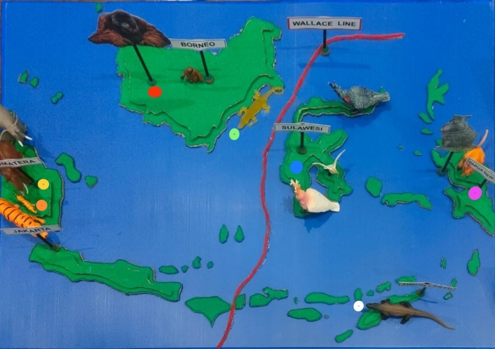

🌏 Wallace Line Animal Explorer
Click a dot to hear the animal and learn about it!

------------------------------------------------ Click a dot to learn about animals! ----------------------------------------------------